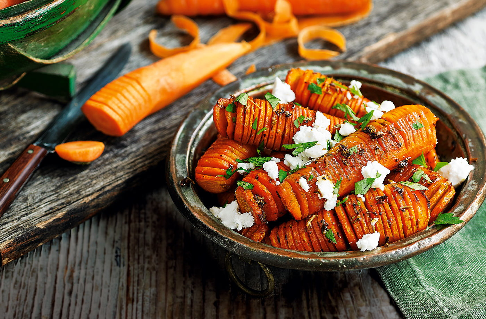

Bar da Cenoura
O Bar do Cenoura é um restaurante acolhedor e descontraído, conhecido por transformar a cenoura em protagonista de pratos criativos e saborosos. No cardápio, é possível encontrar desde entradas leves, como bolinhos crocantes de cenoura com ervas, até pratos principais elaborados, como risoto cremoso de cenoura com parmesão, escondidinho de carne com purê de cenoura e até um inusitado hambúrguer artesanal feito com a raiz.
- Cenoura de qualidade
- Comida caseira
- Ambiente climatizado